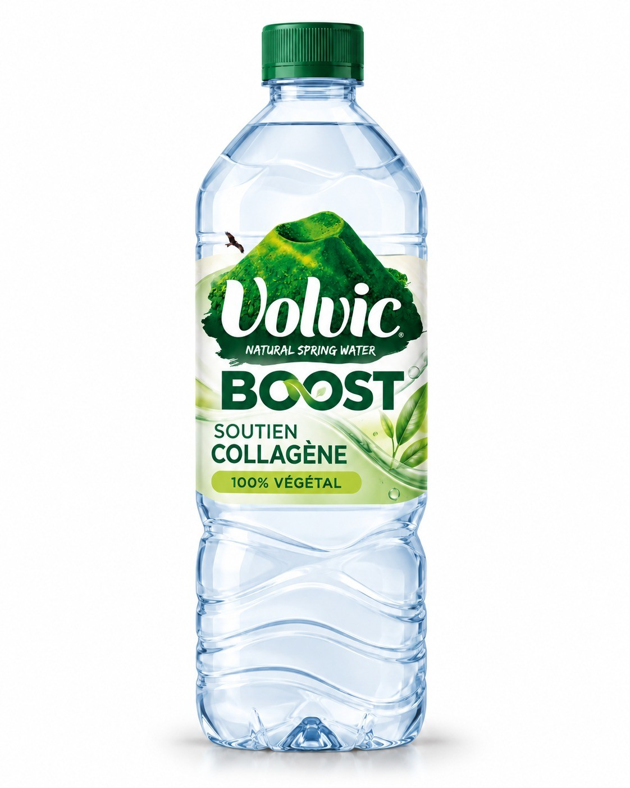
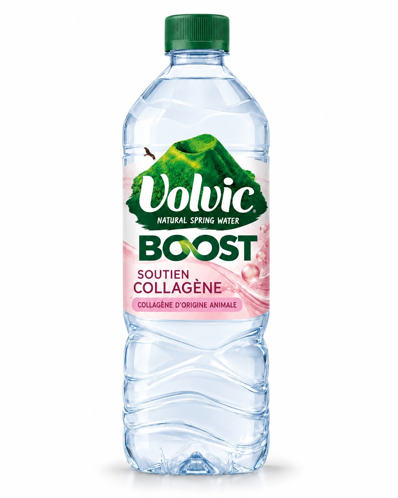

Dossier Prix · M1 Marketing · IAE Clermont Auvergne
Volvic au collagène végétal
Une eau Volvic enrichie en collagène se vendrait-elle plus cher si son collagène était d'origine végétale plutôt qu'animale ? Nous l'avons testé auprès de 80 répondants, puis mis ce prix face aux coûts et aux concurrents.
Qui est-elle, de quoi vit-elle, et que disent ses comptes ?
En brefVolvic est une marque d'eau minérale de Danone, exploitée par la Société des Eaux de Volvic. Elle vit de la vente d'eau embouteillée, et ses comptes sont solides : 547 M€ de chiffre d'affaires en 2024 et 45 M€ de bénéfice.
Qui est-elle ?
Volvic est une eau minérale naturelle puisée dans le massif volcanique d'Auvergne (présentation de la marque par Danone). La marque appartient au groupe Danone, qui a réalisé 27,28 milliards d'euros de chiffre d'affaires en 2025 dans les produits laitiers, la nutrition spécialisée et les eaux. En France, Danone détient plus de 30 % du marché de l'eau en bouteille avec Evian, Volvic, Badoit et La Salvetat. Volvic pèse environ 10 % du marché en valeur, derrière Evian (17 %) ; ce chiffre de part de marché n'est pas daté par sa source. Volvic est certifiée B Corp, un label qui récompense les engagements sociaux et environnementaux.
De quoi vit-elle ?
De la vente de bouteilles d'eau, nature ou aromatisée, en grande surface et en magasin de proximité. C'est une activité de volume et de saison : pour Danone Eaux France, juin à septembre représentent 40 % des volumes annuels. Le prix unitaire est bas : une bouteille de Volvic nature de 50 cl se vend environ 0,50 € (pack de 6 à 2,99 €).
Que disent ses comptes ?
| Société des Eaux de Volvic | 2023 | 2024 | Source |
|---|---|---|---|
| Chiffre d'affaires | 515,5 M€ | 547,0 M€ | Le Journal des Entreprises |
| Résultat net | 23,0 M€ | 45,0 M€ | Le Journal des Entreprises |
| Résultat d'exploitation | 69 M€ | Xerfi |
Construction du calcul · ce que disent ces chiffres
| Terme | D'où il vient | Valeur |
|---|---|---|
| Croissance du chiffre d'affaires | (547,0 − 515,5) ÷ 515,5 | +6,1 % |
| Marge nette 2024 | 45,0 ÷ 547,0 | 8,2 % |
| Marge d'exploitation 2024 | 69 ÷ 547,0 | 12,6 % |
| Repère groupe : marge opérationnelle courante de Danone 2025 | communiqué de résultats Danone | 13,4 % |
La filiale grandit et gagne de l'argent : sa rentabilité d'exploitation est proche de celle du groupe. Elle a les moyens de lancer une nouvelle référence.
Qui sont ses concurrents, à quels prix, et quel plafond en tirer ?
En brefUne eau au collagène n'a qu'un concurrent direct en France dans nos recherches : Humble+, vendue 2,99 € la canette de 33 cl. C'est notre plafond. Autour, les eaux aromatisées et vitaminées se vendent entre 1 et 2,50 €.
Les concurrents et leurs prix
Une eau Volvic au collagène se situerait entre l'eau nature et les boissons « santé ». Nous avons relevé les prix des produits les plus proches :
| Produit | Format | Prix | Prix pour 50 cl | Source |
|---|---|---|---|---|
| Volvic nature | 50 cl (pack de 6) | 2,99 € le pack | 0,50 € | houra.fr |
| Volvic Essentiel Bio (eau aromatisée) | 75 cl | 1,75 € (prix promo) | 1,17 € | Bonial, Carrefour |
| Vitamin Well (eau vitaminée) | 50 cl | 2,55 € | 2,55 € | Fitadium |
| Humble+ Collagen Water (5 g de collagène marin) | 33 cl | 2,99 € | 4,53 € | Je vais mieux merci, Atida |
Quel plafond en tirer ?
Le plafond est le prix du concurrent le plus proche et le plus cher : 2,99 € pour Humble+, la seule eau au collagène trouvée en vente en France. Au-dessus, le consommateur trouve une offre comparable moins chère.
Quelle variation du mix, pourquoi celle-là, et combien coûte-t-elle ?
En brefNous testons l'origine du collagène : végétale (version A, la variation) contre animale (version B, la formule standard du marché). La variation ne coûte pas plus cher, elle coûte moins : environ 0,004 € d'actifs végétaux par bouteille, contre 0,106 € de collagène bovin.
Quelle variation, et pourquoi celle-là ?
Les eaux au collagène du marché utilisent du collagène animal, comme Humble+ et ses 5 g de collagène marin. Notre variation est un collagène d'origine végétale. Il n'existe pas à proprement parler : ce sont des nutriments végétaux, comme la vitamine C, qui aident le corps à fabriquer son propre collagène.
Pourquoi celle-là : elle oppose l'éthique et le naturel au « vrai » collagène, réputé plus efficace, et elle colle à l'image naturelle de Volvic. Seule l'origine change entre les deux versions.


Combien coûte-t-elle ?
Danone ne publie pas ses coûts. Nous avons chiffré chaque poste avec un prix de gros public quand il existe, et une hypothèse signalée sinon.
Construction du calcul · produit de base, commun aux deux versions
| Poste | D'où vient le chiffre | Coût |
|---|---|---|
| Bouteille en plastique 50 cl | préforme à 2,5 à 4 cents de dollar, arrondi pour du plastique recyclé | 0,04 € |
| Bouchon et étiquette | hypothèse | 0,02 € |
| Eau, mise en bouteille, énergie | hypothèse | 0,03 € |
| Transport jusqu'au magasin | hypothèse | 0,05 € |
| Total | 0,14 € |
Construction du calcul · l'actif, différent pour A et pour B
Version A · collagène végétal
| Vitamine C | 2,73 €/kg (3,03 $/kg) × 80 mg | 0,0002 € |
| Extrait de bambou | 40,50 €/kg (42 à 48 $/kg) × 100 mg | 0,0040 € |
| Actif A | 0,004 € |
Version B · collagène animal
| Collagène bovin | 21,15 €/kg (20,5 à 26,5 $/kg) × 5 g | 0,106 € |
| Actif B | 0,106 € |
| A · végétal | B · animal | |
|---|---|---|
| Coût variable par bouteille | 0,14 € + 0,004 € = 0,144 € | 0,14 € + 0,106 € = 0,246 € |
Doses : 80 mg de vitamine C et 100 mg de bambou comme un complément « vegan collagen » ; 5 g de collagène comme Humble+. Dollars convertis à 0,90 €. Le collagène coûte cher au poids ; les nutriments qui aident à le fabriquer, presque rien.
Quel prix accepte-t-il, avec et sans la variation ?
En brefLe client accepte environ 1,50 € la bouteille, quelle que soit l'origine du collagène. Zone acceptable de 1,20 € à 1,80 € avec la variation végétale, de 1,01 € à 1,70 € sans. La variation ne change pas le prix accepté.
Nous avons mesuré le prix accepté de deux façons, sur les 80 répondants (voir « Qui a répondu » plus bas) :
- Van Westendorp : chacun indique, sur un curseur, à partir de quel prix il trouve le produit trop bon marché, bon marché, cher, puis trop cher (Q6 à Q9). En croisant les réponses de tous, on obtient une zone de prix acceptable.
- Gabor-Granger : on propose des prix du plus cher (3,50 €) au moins cher (1,50 €), et chacun dit s'il achèterait (Q10). On obtient la part d'acheteurs à chaque prix.
Van Westendorp
| Point | Croisement | Ce qu'il signifie | Ensemble | A · végétal | B · animal |
|---|---|---|---|---|---|
| PMC | trop bon marché × cher | bas de la zone | 1,10 € | 1,20 € | 1,01 € |
| OPP | trop bon marché × trop cher | prix qui fait le moins de rejets | 1,31 € | 1,30 € | 1,41 € |
| IPP | bon marché × cher | prix perçu comme normal | 1,50 € | 1,51 € | 1,50 € |
| PME | bon marché × trop cher | haut de la zone | 1,71 € | 1,80 € | 1,70 € |
Les courbes se comparent à l'œil ; la différence entre versions se teste sur les réponses de chaque répondant (voir « Ce que permettent de conclure les réponses »). Aucun des quatre seuils ne diffère significativement entre A et B.
Gabor-Granger
Qui a répondu, et que permettent de conclure les réponses ?
En bref80 vraies réponses complètes (41 en version végétale, 39 en version animale), surtout de jeunes adultes (25,7 ans en moyenne). Les répondants ont bien vu la différence, et elle change leurs perceptions (valeurs, image naturelle, confiance), pas leurs prix.
Qui a répondu ?
Le questionnaire en ligne a été diffusé du 20 octobre au 12 novembre 2026. Chaque répondant voyait une seule version, tirée au sort. Les réponses brutes sont publiées dans le fichier de données et tous les calculs dans le script d'analyse.
| Profil | Répartition |
|---|---|
| Âge moyen | 25,7 ans (de 18 à 75 ans) |
| Genre | Un homme : 40, Une femme : 40 |
| Régime alimentaire | Omnivore : 62, Flexitarien : 12, Autre : 3, Végétarien : 3 |
| A acheté de l'eau en bouteille ces 3 derniers mois | 63 sur 80 |
Un échantillon jeune et surtout omnivore : il ne représente pas tous les acheteurs d'eau, et il ne permet pas de comparer les régimes (trop peu de végétariens et de végans).
Que permettent de conclure les réponses ?
1. Les répondants ont-ils vu la différence ? Oui.
La manipulation a fonctionné : 93 % des répondants de la version végétale retiennent une origine végétale, et 90 % de ceux de la version animale une origine animale (chi² = 65,87, 2 ddl, p < 0,001, V de Cramer = 0,91). Un test A/B sans effet peut donc être lu comme un vrai résultat, et non comme un test raté.
2. Le tirage au sort a-t-il donné deux groupes comparables ? Oui, sauf sur un point.
Âge, régime et habitudes d'achat sont comparables (toutes les valeurs de p sont au moins de 0,138). Exception : la dépense habituelle pour une bouteille (p = 0,031). 17 répondants de la version animale dépensent moins de 0,50 €, contre 6 en version végétale. Cette différence se signale et se garde en tête : un groupe qui dépense moins pourrait déclarer des prix plus bas.
3. La version change-t-elle les réponses ?
| Code | Hypothèse | A | B | p | d | Résultat |
|---|---|---|---|---|---|---|
| H2 | L'origine végétale fait monter le seuil « trop cher » | 2,79 € | 2,83 € | p = 0,544 (unilatéral) | −0,02 | non validée |
| H3 | … le seuil « cher » | 2,08 € | 2,06 € | p = 0,469 (unilatéral) | 0,02 | non validée |
| H4 | … le seuil « bonne affaire » | 1,46 € | 1,36 € | p = 0,281 (unilatéral) | 0,13 | non validée |
| H5 | … le seuil « trop bon marché » | 0,86 € | 0,75 € | p = 0,139 (unilatéral) | 0,24 | non validée |
| H6 | L'origine végétale fait acheter plus à 3,50 € (chi², hors graphique) | 10 % | 5 % | p = 0,432 | V = 0,09 | non validée |
| H7 · source | L'origine végétale rend le produit plus conforme aux valeurs | 4,73 | 3,92 | p = 0,014 (unilatéral) | 0,51 | validée |
| H8 · source | … plus cohérent avec l'image naturelle de l'eau | 4,22 | 3,51 | p = 0,037 (unilatéral) | 0,41 | validée |
| H9 · source | L'origine animale inspire plus confiance dans l'efficacité | 4,27 | 3,69 | p bilatéral = 0,032 | 0,49 | rejetée : effet inverse |
| H10 · source | L'origine animale donne une impression de qualité supérieure | 4,39 | 4,49 | p = 0,378 (unilatéral) | −0,07 | non validée |
| E1 | Bien-être (exploratoire) | 4,29 | 3,59 | p = 0,063 | 0,42 | pas d'écart |
| E2 | Consommation quotidienne (exploratoire) | 4,37 | 4,00 | p = 0,325 | 0,22 | pas d'écart |
| E3 | L'innovation justifie un prix plus élevé (exploratoire) | 4,27 | 4,31 | p = 0,901 | −0,03 | pas d'écart |
| E4 | Premier prix accepté (exploratoire) | 2,12 € | 1,95 € | p = 0,270 | 0,27 | pas d'écart |
Perceptions notées de 1 à 7, sur l'échelle de l'article de référence de chaque concept (détail des échelles). Pour les seuils de prix, l'étude ne pouvait détecter qu'un écart d'au moins d ≈ 0,56 : un effet plus petit reste possible.
Ce que nous concluons : l'origine végétale est un argument d'image. Elle rend le produit plus conforme aux valeurs, plus cohérent avec une eau naturelle, et, contre notre attente, plus digne de confiance. Elle ne fait pas payer plus cher.
Quel prix recommandons-nous, la variation se paie-t-elle, et à quel moment le scénario lâche-t-il ?
En brefNous recommandons la version végétale à 1,50 € la bouteille de 50 cl. La variation se paie, par le coût et non par le prix. Le scénario lâche si le prix dépasse environ 1,80 €, ou si la recette végétale coûtait plus de 0,106 € par bouteille.
Quel prix recommandons-nous ? 1,50 €
- C'est le prix perçu comme normal par nos répondants (IPP de Van Westendorp : 1,50 €).
- Il est dans la zone acceptable de la version végétale (1,20 € à 1,80 €).
- Il donne la marge par répondant la plus forte de Gabor-Granger : 0,75 € en version végétale.
- Il reste deux fois sous le plafond des concurrents (2,99 €) et trois fois au-dessus de Volvic nature (0,50 €).
Limite : 1,50 € est le prix le plus bas proposé en Q10. Le vrai optimum pourrait être un peu plus bas ; le prix optimal de Van Westendorp, 1,30 € en version végétale, le suggère.
La variation se paie-t-elle ? Oui, par le coût.
Construction du calcul · contribution par bouteille vendue 1,50 €
- TVA : taxe reversée à l'État, 5,5 % sur l'eau. Elle est comprise dans le prix en rayon.
- Part du distributeur : ce que garde le supermarché qui revend la bouteille. Hypothèse : 30 % du prix hors taxe.
- Prix net producteur : ce qui arrive réellement chez Volvic pour une bouteille.
- Coût variable : ce que coûte la fabrication d'une bouteille (bouteille, bouchon, eau, transport et actif). Il diffère entre A et B à cause de l'actif.
- Contribution : ce qui reste à Volvic une fois la bouteille payée. Elle sert d'abord à couvrir les coûts fixes (publicité, usine), puis devient du bénéfice.
| A · végétal | B · animal | |
|---|---|---|
| Prix en rayon | 1,50 € | 1,50 € |
| − TVA (5,5 %) | − 0,08 € | − 0,08 € |
| = Prix hors taxe | 1,42 € | 1,42 € |
| − Part du distributeur (30 %) | − 0,43 € | − 0,43 € |
| = Prix net producteur | 1,00 € | 1,00 € |
| − Coût variable | − 0,144 € | − 0,246 € |
| = Contribution par bouteille | 0,85 € | 0,75 € |
| Taux de contribution (contribution ÷ prix net) | 86 % | 75 % |
| Bouteilles pour couvrir 100 000 € de coûts fixes | 117 510 | 133 420 |
Les deux versions se vendent au même prix ; seule la ligne « coût variable » diffère. A garde donc 0,101 € de plus par bouteille. Les coûts fixes de Danone ne sont pas publics : le seuil est donné pour 100 000 €.
La version végétale ne se vend pas plus cher, mais elle coûte environ 0,10 € de moins à produire, et elle améliore l'image du produit. Elle rapporte donc plus par bouteille, à prix égal.
À quel moment le scénario lâche-t-il ?
La rentabilité unitaire résiste à tous les chocs testés : même en cumulant une TVA à 20 % (hausse débattue au Parlement), un distributeur plus gourmand et des coûts doublés, il reste 0,47 € par bouteille. Le scénario lâche ailleurs :
- Si le prix dépasse environ 1,80 € : au-delà du PME, les répondants jugeant le produit trop cher deviennent plus nombreux que ceux qui le trouvent bon marché. À 1,90 €, la part d'acheteurs tombe de 88 % à 54 %.
- Si la recette végétale coûtait plus de 0,106 € par bouteille, soit environ 25 fois notre estimation : l'avantage de coût sur le collagène animal disparaîtrait, et rien ne compense, puisque le prix accepté est le même.
- Si le distributeur prenait plus de 90 % du prix hors taxe : la contribution deviendrait nulle. C'est très improbable.
- Si les intentions d'achat sont surestimées, ce qui est le cas de toute intention déclarée : la marge par répondant baisse d'autant, mais la comparaison entre les versions ne change pas.
- Si l'allégation ne tenait pas : le produit ne contient pas de collagène, il ne peut pas l'afficher comme tel. Il devra s'appuyer sur l'allégation autorisée pour la vitamine C, ce qui affaiblit le nom « collagène végétal » testé ici.
Étude universitaire, M1 Marketing, IAE Clermont Auvergne. Non affiliée à la marque Volvic ni au groupe Danone. Les visuels de bouteille sont des maquettes réalisées pour l'étude. Données : réponses au questionnaire, export du 23 novembre 2026. Calculs : script d'analyse.